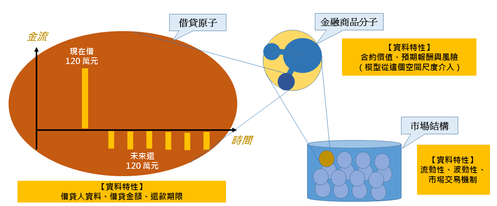

金融的定義
金融的定義
金融的定義
金融的定義
「金融」是在時間尺度上進行資源交換的商業行為。

金融資料的特色
金融資料的特色
- 現代大數據的生成關鍵：人的維度
- 而大數據能挖掘出東西：人性（一致性）
- 思考：金融資料有無此特性
- 提示：人的維度、人性 vs. 金融市場維度、心理
- 冷啟動：金融模型「欠缺訓練資料」
- 現代應用場景的關鍵：短時間尺度
- 大量大範圍數據 → 單次決策的優化
- 短時間尺度的好處：一致性、獨立性
- 金融模型應用場景：長時間尺度（金融的定義）
- 長時間尺度 → 場景交互作用 → 風控問題 → 模型解釋性問題
- 資源交換 → 未來倚賴信任 → 監管問題 → 模型抽象限制問題
金融技術的整合
金融技術的整合
整合技術與業務
整合技術與業務
- 協助業務流程精簡
- 提高客戶的生命週期
- 降低客戶的流失率
- 提高業務數據的重複使用率
- 實時追蹤
- 知識沉澱
- 高度客製化
- 思考：特定的應用場景技術如何開發？
應用場景的挑戰
應用場景的挑戰
- Xps ( X per second )
- 客戶生命週期
- 資金/資產的經手規模 (AUM) 的成長率
- 隱私與數據安全
- 數據流
- 數據驗證
- 思考：技術人怎麼給予業務支持
機器人理財
機器人理財
機器人理財的技術核心
機器人理財的技術核心
解決公開市場資訊的不對稱
- 為什麼原本有資訊不對稱？
- 不同專家個體化差異難以統合（哪個尺度？）
- 思考：憑什麼機器人能統合？
- 被動投資 Beta 與主動投資 Alpha
- 警惕：電風扇 (傳統) 與X光 (FinTech)
機器人理財的技術核心
機器人理財的技術核心
減少投資人情緒對市場的影響
- 為什麼投資人情緒會對市場有影響？
- 原因：金融市場交易的搓合制度
- 思考：機器人理財真的能避免嗎？
機器人理財的技術核心
機器人理財的技術核心
降低服務成本與服務門檻，擴大市場佔有率
- 為什麼靠機器人就能降低成本？
- 0.5%的管理費門檻
- 思考：怎麼估計機器人系統的開發成本
- 富人的理財方式適合一般人嗎？
- 例子：避險基金的最低投資門檻
機器人理財的技術流程
機器人理財的技術流程
- 了解用戶的風險偏好
- 敏感係數 (Delta)
- 安全係數
- 基於不同的風險偏好，提供不同的資產配置方案
- 自動化連結客戶的帳戶進行資產配置
- 對資產配置結果，實時 (Real-Time) 進行追蹤
- Colocation
- Risk Parity
- 穩健達到理財目標，執行客戶帳戶退場機制
- 惡劣的容災場景（N個9、底層隔離）
智慧化資產管理
智慧化資產管理
了解客戶風險偏好
了解客戶風險偏好
- 資產管理有很多種：有房屋、土地、廠房設備、股票債券和貨幣。
- 了解客戶的需求
- 客戶生命週期
- 電力公司四五月要繳稅和進行每年投資
- 月固定有五千萬歐元
- 電力公司持有許多能源公司股票
- 希望公司資產不要依賴能源公司股價
- 石油公司每季要維修海上鑽井設備
- 每季金額不定在三千到七千萬歐元
- 石油公司持有許多原物料合約
- 希望公司資產不要受原物料市場影響
- 電力公司四五月要繳稅和進行每年投資
- 客戶生命週期